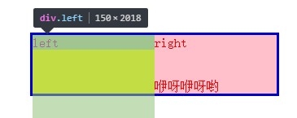

今天做简历的时候用到两列布局，收获两个 CSS 偏方。
两列等高布局
先上代码1
2
3
4
5
6
7
8
9
10
11
12
13
14
15
16
17
18
19
20
21
22 .wrap{
margin: 0 auto;
width: 600px;
border: 3px solid #00C;
overflow: hidden;
}
.left {
float: left;
width: 150px;
background: #B0B0B0;
padding-bottom: 2000px;
margin-bottom: -2000px;
}
.right {
float: left;
width: 450px;
background: #6CC;
padding-bottom: 2000px;
margin-bottom: -2000px;
}
重点是 .left 和 .right 的 pading 和 -margin 的 bottom 足够大，看似是抵消，实则是用来撑大 wrap 的边界。然后奇迹发生了

left 的边界并没有变大，但是颜色溢出到了 wrap 中，但是因为 overflow: hidden 而被截断在 wrap 边界。只能认为是 CSS 认为 padding 无穷大，故背景色一直延伸，但是边框却因为 margin 和 padding 的抵消而未变化。这着实矛盾，百思不得其解。只能暂且认为 CSS 在判定边框的时候会综合考虑 padding 和 margin ，但是背景色仅会考虑 padding 所致，不过背景色本来就只考虑 padding 上着色，但严谨的来说，背景色不应该是用边框内来判定么，这是BUG？
伪类/伪元素实现强调特效
CSS 两个伪类 :before 和 :after 一直认为仅用来添加文本，用于提示。今天看到还有用来做特效的，颇有颜文字的精髓，大开眼界。
区别
先说说伪类/伪元素的区别，网上已经有前辈精确的描述
伪类的效果可以通过添加一个实际的类来达到
伪元素的效果则需要通过添加一个实际的元素才能达到
1 | <p> |
例如 ，如果要将Hello着色，用伪类描述为 p i:first-child { color: red; }，如果仅用CSS实现需要为第一个 i 元素添加类 .className { color:red; }。
也就是如果要实现伪类的效果，是可以添加一个 class 实现的。
而伪元素则是必须要添加一个元素实现，例如 H 着色。
1 | <i><span>H</span>ello</i> |
特效
a {
position: relative;
display: inline-block;
outline: none;
text-decoration: none;
color: #000;
font-size: 32px;
padding: 5px 10px;
}
a:hover::before,
a:hover::after {
position: absolute;
}
a:hover::before {
content: "\5B";
left: -20px;
}
a:hover::after {
content: "\5D";
right: -20px;
}
其中 content 不能为空，原理就是用 :after和 :before 在前后增加 ”div“ ,实现 :hover 显示/隐藏的效果。
特技
还有一个重点是通过伪类增加的文本不可复制，因为不在DOM中。
想出这些用法的人真是……完全不按套路出牌！ (╯°Д°)╯︵ ┻━┻